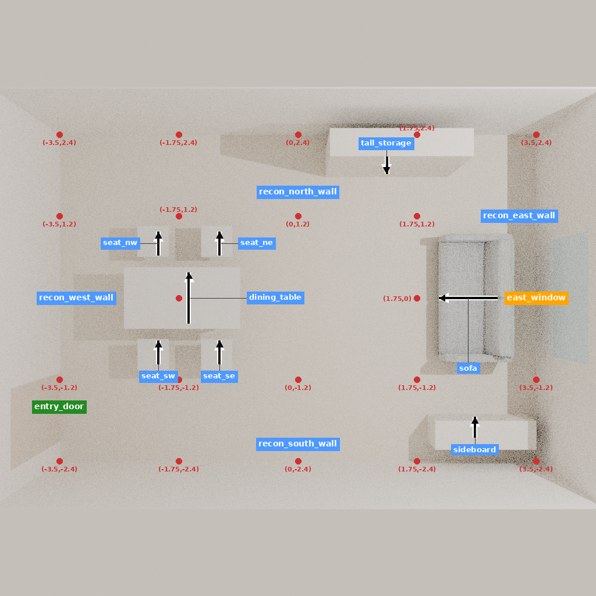

2026-11-10。本轮完成原生恢复、真实 CPU 渲染和处理器编码；没有模型调用、训练或新整场生成。研究目标仍是从文字完成室内三维场景。以下明确区分实测、普通理论与待证假设。
| 项目 | 证据 | 适用边界 |
|---|---|---|
| F-House 固定状态 | 原构建器完整执行、原生导入回环；20/20资源逐字节一致，3份原始资产哈希匹配，14对象状态一致 | 研究者开发重建；非历史住宅实测，也不是模型生成 |
| 五视图 | 原生导出、CPU渲染、实际对象标注全部完成；渲染墙钟230.53秒，采样进程树峰值624 MiB | 8 samples，当前依赖版本；不声称旧图逐像素一致 |
| 共同输入 | 新版本保留全部68组件、24单元、2975个原监督token；14/24单元实际编码，10仍缺视图 | 没有用14个子集启动训练，未伪造缺失决定 |
| 一致性验收 | 57项文件、状态、图像和材料检查通过 | 不等于独立物理、语义或真人偏好验收 |
新恢复的是一个单元。注册表共5单元的14个分阶段组件重新编码用于跨组核对，不能算作本轮新恢复5个房间。普通连续对照实际编码14个单元；相同单元各组的视觉张量一致。分阶段材料编码30.90秒，连续对照编码31.18秒，仅为准备阶段耗时。
失败v1、v2保留：两次仅14/20资源吻合。原因分别涉及网格导出版本及额外写入路径元数据；v3使用原4.7.4网格函数、4.5.3原生构建环境，未手改导出metadata后达到20/20。两次失败分别耗时17.34、30.40秒，v3为29.22秒，原生导出31.10秒，标注8.57秒。这些重试计入工程成本。

桌凳、沙发及储物对象和原生标签可见。方盒储物代理、图像颗粒和用途覆盖限制仍保留；图像只用于输入恢复。
设X包含原始用途、真实当前状态、五视图和工具回执，D是模型自己提出的用途决定，A是动作，T为共同场景执行器。候选流程为：读取X→生成D→在相同X和D下生成A→统一校验与执行T→获取真实新状态→继续。D不写成事实，不代替执行回执；停止仅为提议，必须由共同完成检查确认。家具策略嵌入共同五阶段生成流程，其余阶段不能获得不同模型或工具优势。
代码中paired_phase_v3实际先调用decision再调用action；动作阶段读到生成的D。joint_same_material_v1一次连续生成D及A。separate_phase_v3也生成D但不给动作阶段；separate_direct_v3直接生成A。所有模式有共同输出token和时间上限。两阶段每次重新prefill五视图，D阶段KV缓存没有传到A；随机种子也按阶段偏移。相同输出上限不等于相同计算成本。
p(D,A | X) = p(D | X) p(A | X,D) L = Σ_i Σ_t w_it · [−log pθ(z_it | serialized_prefix_it)]
第一式是概率链式法则，不是新学习方法。第二式对应真实加权token交叉熵。当前权重为既定家族/组件归一化系数：动作总质量1，决定5/6，总计11/6；它不是未经加权的序列联合负对数似然。不能把加权损失直接解释为边缘概率下界。
若两个实现对每个目标token使用相同序列化前缀、视觉张量、位置/注意力、权重与同一参数状态，并在相同随机计算下累计梯度后只做一次更新，则分块求和与连续目标求和具有相同数学梯度。若中间更新参数、改变归一化、加入阶段提示、换采样或缓存策略，这个等价结论不再直接适用。浮点内核顺序还可能带来数值差异。
本实现不是上述严格等价情形：24个单元均增加阶段system指令；2个STOP单元存在阶段拼接分隔差异。普通连续对照保留同一监督token和系数，但去掉阶段指令。因此即使候选胜出，首先识别的是“整套阶段协议”的效应，仍不能只归因于决定语义。
教师条件下A更容易预测，也不保证自由生成场景变好。实际部署用模型产生的D；采样时动作分布涉及Σ_D p(D|X)p(A|X,D)，贪心解码又是另一种策略。提高某一教师路径的概率，不能控制其他路径或整场执行后果。旧有限概率反例已保存，本轮未重跑、更未把该反例计作三维实验。
24单元只有10个决定标签：8个操作选择、2个STOP总结，涉及5种来源原则。8/8操作决定引用与动作一致，6个现有对象引用位于对应状态，另2个为添加资产。它们可以提供有效用途知识，但同时也提供了高层动作/对象线索。当前字段不是可执行几何约束轨迹。两组用途转换对的观察状态均不同，因此没有形成“同一场景只变用途”的受控反转比较。
14个缺失D的单元仍保留原动作监督，不补造解释。两阶段部署总是产生D，而这些单元的动作训练前缀没有D，这一分布差异仍未解决。本轮恢复F-House视图不会自动补齐其决定监督。不能将输入恢复误报为训练已就绪。
| 对照 | 控制的问题 | 允许的解释 |
|---|---|---|
| 冻结底座＋共同工具/普通搜索 | 提示、几何反馈或搜索是否足够 | 决定是否有必要训练 |
| 相同材料，普通连续D+A | 普通自回归理由动作学习 | 不能靠击败无理由弱对手证明两阶段价值 |
| 相同材料，辅助D监督＋直接A | 训练材料效应与推理时读取D分开 | 有D训练不等于必须两阶段调用 |
| 候选两阶段D→A | 显式阶段协议整体 | 需报告完整质量、损坏项、未知和全部成本 |
先做普通连续与两阶段的端到端对照。只有出现稳定差异，才值得追加同格式内容干预，区分用途判断与动作提示。错配D制造矛盾，不能单独证明正确D学到了专业设计；教师D属于oracle诊断，不能充当自主系统成绩。任何干预都另存输入，原目标不改。
完整生成的评估单位应是独立房间家族；比较必需对象身份/语义、用途与空间关系、已正确部分受损、碰撞/越界/支撑及未验证比例。所有组共享资产获取策略、编辑权限、验证器和累积预算。历史编辑重建只能用于开发，不能变成从空房生成或独立人类偏好证据。若普通连续生成达到同等质量与成本，就缩减两阶段主张；若只改善STOP，就只报告停止策略，而不宣称学会全局设计。
ThinkBLOX §III-A/B已有场景状态条件下连续think/answer监督和token交叉熵。Scene-Designer §3.1–3.2已有OTA训练、执行候选分支比较及父子场景改进反馈。它们限定了“理由在动作之前”和“执行后反馈”的创新空间；本轮仅定向读相关方法与目标，未复现性能。
完整阅读固定AssetManager._retrieve_hssd_assets后确认：检索→GLB转换→VLM朝向/质量/材质分析→规范朝向→凸分解→SDF→SceneObject。已跑HTTP检索只是起点。缓存文本向量不支持未见描述；缺失up/front也不能由名字猜测。下一步先核对是否存在与真实资产严格匹配的物理属性缓存。不能用伪响应跳过服务然后声称原生整场通了。
实测汇总 · 57项核验 · 命令 · 未完成清单 · 逐决定审查 · 真实编码记录
保留原始资料与旧实验。仅删除已确认可再生的缓存、失败尝试重复二进制和已完成渲染的BLEND中间文件，逐项清理回执保留。新有效资源包与全部五图仍在数据盘。研究未完成，不申请GPU、不启动训练，不保证CVPR贡献；下一轮仍须补齐固定观察及共同工具运行条件，再验证完整场景收益。